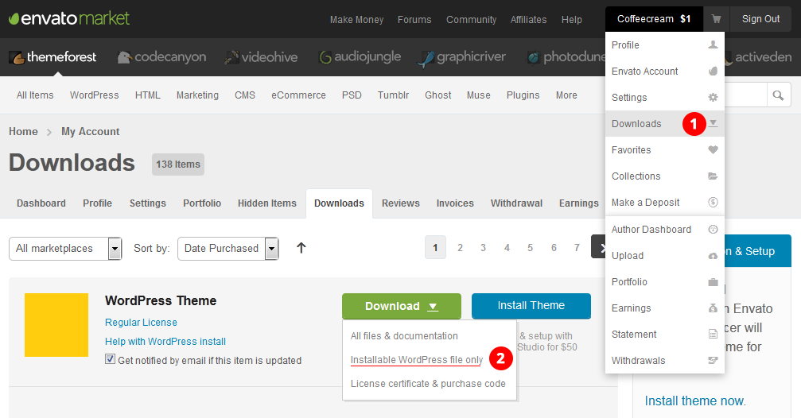
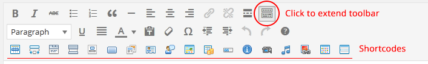

To install this theme you must have a working version of WordPress already installed. For information on installing the WordPress platform, please see the WordPress Codex.
In this video you will learn how to upload and activate a theme, import demo data, and finish it with setting to have the same site as on demo.
Theme require and recommends several plugins. Required plugins need to be installed and activated after theme activation - you will see the special message after theme activation. Here is the list of required plugins:
Here is the list of optional plugins. Activate them if you need these features:
We have include the exported XML file from our demo, this allows you to quickly set up your theme the same way our demo is set up.
Follow these steps below to create 1 by 1 demo on your instalation:
There are two ways to update a theme. First one is manual:

Second way is to setup an automatic updates — please read this article on how to do that.
Usually the first step you are doing after theme install is creating a pages like "Home" and "Blog" and assingning then respectively as a home page and posts page in "Settings » Reading".
Then you have a Theme Options panel in the "Appearance" menu section. There are several sections in theme options that allow you to customize the theme to fit your needs. Just walk throught them and you will find what is it all about.
In this video you will learn how to create a single page layout, create and edit slider, section pages with background and map.
There are two types of page templates available - for child pages (section - marked as "Section: …") and usual page templates (marked as "Single: …") for the traditional stand alone pages.
To create a single page layout (with child pages as sections) you need first to create a parent page and assign "Homepage" template for it. Then all the child pages you create will go as its sections. You can change the order of these sections by editing the "Order" property (field under template assignment filed).
For each page you have a default set of options available for page with every template:
After assigning a template for the page — save it, then you will see additional custom set of options available for this page. Like section background, or setting for the map — depending on the template.
Slider is also a page, with special 'Section Slider' template. To edit the slides you need to go to that page edit screen, scroll down and there you will see a slides and other settings.
Just as slider, Map is also a page with special template. It works the same way - sroll down to map settings, set the map center coordinates, and then add your locations. You can get coordinates for your map at http://www.latlong.net/.
You can create different types of blog posts:
To create a video post you need to add links to the video files (in case with self hosted video), or URL's (in case of embedded) in the special textarea filed. If you adding a link to files (several in different romats) - put each link on a new line. Same rule works for audio posts. Examples:
Self hosted video files:
http://yoursite.com/themes/perfekta/wordpress/wp-content/uploads/2014/01/trailer_iphone.m4v http://yoursite.com/themes/perfekta/wordpress/wp-content/uploads/2014/01/trailer_400p.ogg
YouTube link for embedded video:
http://youtu.be/C-y70ZOSzE0
To enable poster for video and qudio player - upload a thumbnail to a post.
Supported files formats for video: 'mp4', 'm4v', 'webm', 'ogv', 'wmv', 'flv'. For audio: 'mp3', 'm4a', 'ogg', 'wav', 'wma'.
To create a gallery post, just use the gallery button below the visual editor so select or upload images.
You have two custom post types for creating reivew and staff posts. Staff, blog and review posts can be show in a carousel using a special shortcode.

You have a lot of shortcodes available that will allow you to create rich pages and sections.
You can see the examples and list of shortcodes on the demo site.
For each shortcode you have a special button with icon in the visual editor, by clicking the shortcode button its code will be added to the edit area. Then you only need to edit the attributes according to your needs.
CF7 plugin allow you to easily create advanced tontact forms. Here is the example code for generating the same contact form as on the demo site. Add this code to the "Form" section field:
<div class="row"> <div class="form-group col-sm-4">[text* name class:form-control placeholder "Name"]</div> <div class="form-group col-sm-4">[text* email class:form-control placeholder "Email"]</div> <div class="form-group col-sm-4">[text* phone class:form-control placeholder "Phone"]</div> <div class="form-group col-sm-12">[textarea message class:form-control placeholder "Message"]</div> <div class="text-center">[submit class:btn class:btn-primary class:btn-lg "SUBMIT"]</div> <p> </p> </div>
Then to the "Mail" section and enter the data below.
Then go to "Message Body" textarea and add this code there:
From: [name] <[email]> Phone: [phone] Message Body: [message]
In the "To:" field add your email (sender's email).
In the "From" section add:
[name] <[email]>
Enter the subject you want in the "Subject:" field.
This is a sample form configuration.
Note that you need to have very basic knowledge of Bootstrap grid calsses to manage columns for your forms. You can always ask us for a help of support forum.
Its recommended when generating another form element to add a "form-control" CSS class to it, and use placeholders instead of labels.
To localize the theme (translate to your native languare hardcoded phrases like "Read More" etc.) you can use a "Codestyling Localization" plugin. Install this plugin first. Plugin documentation located here.
The theme only comes with a magicreche.pot / magicreche.po in the magicreche/lang folder - you must rename them to match your desired language set in wp-config.php and translate from there.
Use this plugin to edit the '.po' files in the "Tools > Localization" in WP dashboard.
For example:
Name the language file to match your language code define the in the wp-config.php file - so if you have:
define('WPLANG', 'pt_BR');
in there, make sure you've named the po file pt_BR.po .
Also make sure the .pot/.po resides inside of the magicreche/lang folder, once you've done that hit "rescan" in codestyling localization to get all the theme's strings.
Theme support WPML plugin for multilanguage websites. This is a paid plugin and can be bought of the official website. After installing the plugin, you need to configure it in the "WPML" section of the dashboard. Setup the languages you want to translate to and then go to "Translation Management » Multilingual Content Setup" go thought list and decide which content you want to translate and which not.
When you activate and setup plugin the language switcher will appear in the header.
As a free alternative to the WPML we recommend to use Polylang plugin which also will work nicely with the theme.